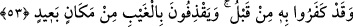

52. (İş işten geçtikten sonra:) “Ona inandık” demişlerdir, ama uzak yerden
(dünya hayatı gelip geçtikten sonra) îmâna kavuşmak onlar için nasıl mümkün olur?
İş işten geçtikten azâbı gördükten sonra: “Ona” Muhammed (a.s.)’a “inandık”
demişlerdir, ama uzak yerden îmâna kavuşmak” kolay bir şekilde îmânı elde etmek
“onlar için nasıl mümkün olur?” Çünkü îman, teklif mekânı olan dünyadadır. Âhirete
irtihal etmeleriyle dünya onlardan uzaklaşmıştır.
Îman ellerinden kaçtıktan ve uzaklaştıktan sonra îmandan faydalanma konusunda
onların durumu, bir ok atımlık mesâfede olan şeyi bir kulaç mesâfeden aldığı gibi
almaya çalışan kimsenin durumunun imkânsızlığına benzetilmiştir.
53. Halbuki daha önce onu (hakkı) inkâr etmişlerdi. Uzak bir yerden gayb
hakkında atıp tutuyorlardı.
“Halbuki daha önce” dünyada mükellefiyet vaktinde “onu” Muhammed (s.a.)’ı ya da
O’nun kendilerini uyardığı şiddetli azâbı “inkâr etmişlerdi.”
Tevbe kapıları kapandıktan sonra tevbe ettiler. Sebepler/vâsıtalar ortadan kalktıktan
sonra pişman oldular. Onlar için hüsran, pişmanlık, azab ve elemden başka bir şey
yoktur.
Senden sonra bırak gözlerim ağlasın,
Artık o safâ ve mutluluk günlerine dönüş yok.
Hâfız der ki:
Dünyada iken gücün kuvvetin kıymetini bil.
Çünkü yerin altında güçsüzlük devirleri gelip çatacaktır.
Yâni insan ölüp toprak altına gömülünce, yeryüzünde diriyken yapabildiği hiç bir şeyi
yapamaz.
“Uzak bir yerden” Hz. Peygamber (s.a.)’in durumuna uzak bir cihetten O’na şâir,
sihirbaz, falcı ve yalancı diyerek “gayb hakkında atıp tutuyorlardı.” Rasûlullah (s.a.)
hakkında kötü sözler söyleyerek veya “Biz azâba uğratılacak da değiliz” (Sebe,
34/35) dedikleri gibi azâbı kesin olarak yok sayarak yalan zan ile atıp tutuyorlar,
kendilerine âşikâr olmayan hususlarda ileri-geri konuşuyorlardı. Belki de bu âyet, bu
konuda onların durumunu, ulaşmasında zanna hiç mahal olmayan uzak bir yerden
görmediği bir şeye atış yapanın hâline benzetmektedir. Ya da onların dünyada
kaybettikleri îmânı elde etme konusundaki durumları (karanlığa) atan kimsenin
durumuna benzetilmiştir.